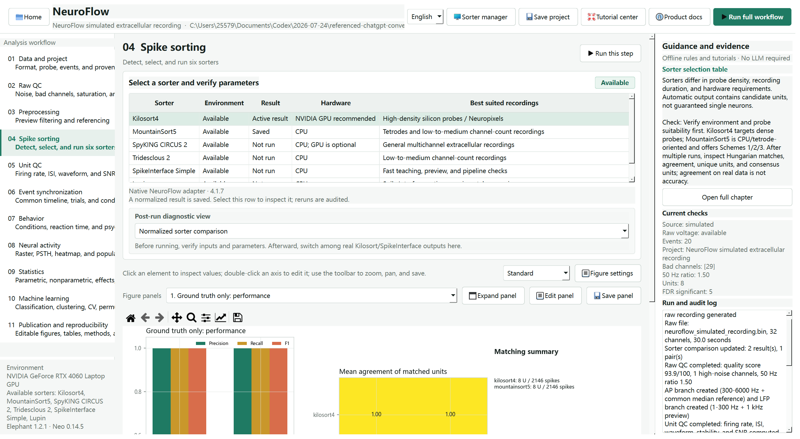

Data and project / 数据与项目
Format, probe, units, events, source integrity, and a read-only project link.
Complete vertical chain
横向方法可以逐步增加，但从数据到论文的每个必要阶段都必须存在、可跳过、可替换并说明原因。
Horizontal methods can grow over time, while every required stage from data to publication remains present, replaceable, skippable, and explained.

Format, probe, units, events, source integrity, and a read-only project link.
Zoomable traces, RMS, clipping, line noise, channel-frequency power, and quality over time.
Separate AP/sorting and LFP branches, visible parameters, preview, and duplicate-processing safeguards.
Kilosort4 first, replaceable sorters, real logs, templates, drift, amplitudes, similarity, and exported files.
Rate, ISI violations, SNR, waveform, ACG, amplitude, stability, and a manual-decision trail.
Common time base, trial table, event counts, residuals, missing pulses, and drift checks.
Condition balance, reaction time, psychometrics, missing values, and trial exclusions.
Event responses, Elephant spike statistics, LFP spectra, spike-field coupling, and method cases.
Sampling hierarchy, paired/independent tests, effects, confidence intervals, mixed models, circular surrogates, and multiplicity.
Classification, regression, clustering, grouped validation, permutation tests, ROC, importance, and population trajectories.
Editable vector figures, data tables, Methods draft, environment versions, parameters, and project provenance.
| Input | Raw voltage | Typical use | Validation |
|---|---|---|---|
| NeuroFlow simulation | Yes | Full workflow and sorter validation | Known spikes, events, respiration reference |
| Generic binary | Yes | Custom interleaved recordings | Rate, channels, dtype, scale, size |
| Intan / Open Ephys / SpikeGLX / Blackrock / Plexon / TDT / NWB | Yes | Acquisition-system import | SpikeInterface reader and stream check |
| IBL ALF | Optional | Public trial, spike and cluster objects | ALF object dimensions and time base |
| Kilosort / Phy output | No | Resume after external sorting | spike_times, clusters, parameters |
选择 sorter 后仍需确认硬件、探针、参数和输出。Kilosort4 运行后可以切换真实的流程日志、漂移、振幅、模板、相似度、污染率与文件视图。
Selecting a sorter does not remove the need to verify hardware, probe, parameters, and output. Kilosort4 results expose pipeline logs, drift, amplitudes, templates, similarity, contamination, and files.
Kilosort4、MountainSort5 与其他已运行 sorter 会分别保存，再转换成统一的 Unit→秒级 spike times。比较视图使用 SpikeInterface 的事件匹配与 Hungarian Unit 匹配，显示算法间一致度、独有 Unit 和至少两个 sorter 支持的共识 Unit。
Kilosort4, MountainSort5, and other completed sorter outputs are retained separately and normalized to Unit-to-spike-times in seconds. The comparison view uses SpikeInterface event and Hungarian Unit matching to show agreement, unique units, and consensus units supported by at least two sorters.
中央分析区可独立上下滚动，并为科研图保留稳定的大画布。多面板图中的每个子图都可单独选择、放大、编辑和导出为 SVG、PDF 或 300 dpi PNG。
The central workspace scrolls independently and reserves a large, stable scientific canvas. Each subplot can be selected, expanded, edited, and exported independently as SVG, PDF, or 300 dpi PNG.